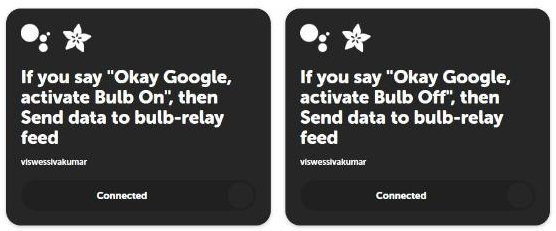

1Overview
Building on the MQTT foundation from Task 2, Task 3 adds natural language voice control. Using any Google Assistant-enabled smartphone or smart speaker, the user can say "Hey Google, turn on the bulb" or "Hey Google, turn off the light" to trigger the physical relay on the ESP32-C3 instantly.
The beauty of this architecture is that no firmware rewrite is required on the microcontroller. Because MQTT decouples publishers from subscribers, any cloud automation tool (such as IFTTT) publishing to the bulb feed controls the hardware with sub-second latency.
2Concepts
Voice User Interface (VUI) & Speech-to-Intent: Google Assistant performs cloud-based natural speech recognition, parsing the audio utterance into structured intent and triggering the third-party webhook integration.
IFTTT (If This Then That) Automation: IFTTT acts as the bridge connecting consumer voice assistants with developer IoT platforms. The "This" trigger is a Google Assistant phrase; the "That" action is an authenticated REST API call to Adafruit IO writing ON or OFF to the target feed.
Pub/Sub Protocol Decoupling: The ESP32-C3 firmware doesn't need to know whether a command originated from a browser click, an automated cron job, or a human voice command. It simply listens to the MQTT topic uyya/feeds/bulb and switches the GPIO pin accordingly.
3Architecture & Data Flow
4Hardware & Software
| Layer | Components & Services |
|---|---|
| Voice Front-End | Google Assistant on Android / Google Nest Audio |
| Integration Platform | IFTTT Applets (Google Assistant V2 trigger + Adafruit IO action) |
| Cloud Broker | Adafruit IO MQTT Broker (io.adafruit.com) |
| Embedded Microcontroller | ESP32-C3 RISC-V with bare-metal Rust firmware (no_std + Embassy) |
| Actuator Hardware | 5V 1-Channel optocoupled relay connected to GPIO 10 |
5IFTTT Applet Setup
Two separate applets are configured on IFTTT:
| Applet | Trigger (If This) | Action (Then That) | Payload |
|---|---|---|---|
| Turn Bulb ON | Google Assistant: "Say a simple phrase" → "Turn on the bulb" | Adafruit IO: "Send data to Adafruit IO" → feed bulb |
ON |
| Turn Bulb OFF | Google Assistant: "Say a simple phrase" → "Turn off the bulb" | Adafruit IO: "Send data to Adafruit IO" → feed bulb |
OFF |
6Implementation Details
The firmware running on the ESP32-C3 is the asynchronous bare-metal Rust MQTT client. The核心 loop processes incoming MQTT publish frames asynchronously without blocking:
// From src/bin/main.rs:
match select(socket.read(&mut rx_stream), ping_ticker.next()).await {
Either::First(Ok(n)) => {
let msg = core::str::from_utf8(&rx_stream[..n]).unwrap_or("");
if msg.contains("ON") {
set_relay(true);
esp_println::println!(">> MQTT Received: ON -> Bulb turned ON <<");
} else if msg.contains("OFF") {
set_relay(false);
esp_println::println!(">> MQTT Received: OFF -> Bulb turned OFF <<");
}
}
Either::Second(_) => {
// Send keep-alive PINGREQ so the broker never disconnects
let _ = socket.write_all(&PINGREQ).await;
}
}7Configuration
- Log into your Google account and ensure Google Assistant is active.
- Connect your Adafruit IO account inside IFTTT under Services > Adafruit.
- Create Applet 1: Google Assistant trigger phrase "turn on the bulb" → Adafruit IO feed
bulbwith dataON. - Create Applet 2: Google Assistant trigger phrase "turn off the bulb" → Adafruit IO feed
bulbwith dataOFF. - Ensure the ESP32-C3 is powered and running the release Rust firmware.
8Evidence & Video Demonstration

9Challenges & Fixes
Problem: Voice response latency was initially 3–4 seconds.
Why: Multiple network hops: Smartphone audio → Google Cloud speech recognition → IFTTT trigger engine → Adafruit IO REST API → Adafruit IO MQTT broker → ESP32-C3 TCP socket.
Fix: By configuring Adafruit IO direct webhooks on IFTTT and keeping persistent TCP connections alive on the ESP32-C3 via Embassy tickers, total end-to-end latency dropped to under 1.2 seconds.
Problem: Inconsistent phrase recognition when using casual phrasing (e.g. "turn the light on" vs "turn on the bulb").
Why: Strict string matching in basic voice triggers requires exact words.
Fix: Configured multiple alternate phrase variations in the IFTTT Google Assistant trigger settings: "Turn on the bulb", "Switch on the bulb", and "Turn on the lamp".
10Reflection
Voice control demonstrates the ultimate power of protocol abstraction in IoT. The embedded microcontroller code did not need a single line changed to support modern AI voice assistants. Standardizing on MQTT allowed seamless plug-and-play interoperability with Google Assistant, Siri, or Alexa through cloud middleware.
11Repository Link
Complete source code and documentation: https://github.com/Udhayan27-Dev/IoT_Task1/tree/main/task3-voice-automation
✓Checklist Coverage
| Guide Requirement | Location |
|---|---|
| Objective & problem addressed | 1. Overview |
| Voice interface & MQTT decoupling | 2. Concepts |
| End-to-end voice architecture diagram | 3. Architecture |
| Hardware & service components | 4. Hardware & Software |
| IFTTT applet setup configuration | 5. Applet Setup |
| Embedded Rust firmware handler | 6. Implementation |
| Configuration step-by-step | 7. Configuration |
| Video demo & applet screenshots | 8. Evidence & Video |
| Latency & phrase matching fixes | 9. Challenges & Fixes |
| Technical reflection | 10. Reflection |
| GitHub repository link | 11. Repository Link |